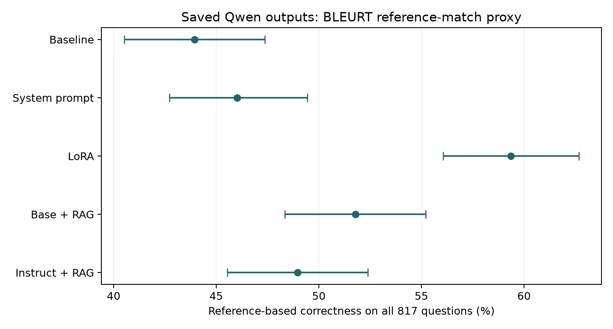

The question, methods & findings
Project overview
I compared five saved Qwen 2.5 answer sets from a three-person coursework project. I evaluated the same 817 TruthfulQA questions for each set, using the highest-scoring correct or incorrect BLEURT reference to assign a correctness label. I calculated question-level bootstrap intervals and paired McNemar tests. The LoRA answer set scored 59.36%, compared with 48.96% for Instruct + RAG. The paired difference was 10.40 percentage points, with a 95% bootstrap interval of 5.88–14.81 points.
Results
| Saved answer set | Correctness on all 817 questions | 95% bootstrap CI |
|---|---|---|
| Baseline | 43.94% | [40.51%, 47.37%] |
| System prompt | 46.02% | [42.72%, 49.45%] |
| LoRA | 59.36% | [56.06%, 62.67%] |
| Base + RAG | 51.77% | [48.35%, 55.20%] |
| Instruct + RAG | 48.96% | [45.53%, 52.39%] |
I recomputed the scores on 8 October 2026. The table comes from model_summary.csv. I used 10,000 matched question-level bootstrap resamples with seed 20261008. paired_comparisons.csv reports all ten model pairs, exact McNemar tests, and Holm-adjusted p-values.

I use semantic reference matching because it allows paraphrases without requiring exact wording. BLEURT labels are a correctness proxy, separate from TruthfulQA's multiple-choice scores and human truth ratings. I score blank answers as incorrect and count every question. I retain the original rule that an exact tie favours a correct reference.
I also report cosine similarity above 0.60 as a diagnostic. That filter retains 292–685 answers across the five models. I do not rank models on those different subsets. I do not recompute the earlier BLEU and ROUGE summaries.
Limitations
I do not know the exact Qwen checkpoint or size, LoRA training data, RAG corpus, or generation settings, so I cannot rule out benchmark overlap. Nearest-reference BLEURT labels can miss factual errors and do not measure informativeness. The intervals describe variation across questions, not variation between training or generation runs.
Credits
Project authors: Laura Maria Fetz, Martin Turna, and Bart Amin.
TruthfulQA is by Stephanie Lin, Jacob Hilton, and Owain Evans (source, paper). I include the Apache 2.0 licence. The course CSV has a different filename from upstream; I retain its supplied questions, references, source column, and ordering. This attribution also applies to benchmark content in the generated-answer files. It does not assign a licence to the project's code or generated answers. I use BLEURT by Sellam and colleagues (paper).
From the project documentation. Download the overview.
Read the analysis
Original notebook
Original coursework notebook. It contains code, explanations, and links to the original result tables, but no saved cell outputs. The overview above presents a later evaluation, so its scores and conclusions may differ.
TRUTHFULQA: COMPARING VARIATIONS OF QWEN 2.5 ON ADVERSARIAL AND NON-ADVERSARIAL QUESTIONS
INTRODUCTION
AIM
In this notebook, we aim to evaluate the truthfulness of three Qwen 2.5 model variants when answering two types of questions:
- Adversarial Questions: These are designed to challenge the models by including misleading or complex phrasing, testing their ability to resist inaccuracies and produce factually correct responses.
- Non-Adversarial Questions: These straightforward questions assess the models' ability to provide accurate and reliable answers in the absence of deceptive framing.
CONTEXT
This project is inspired by the work of Lin et al. (2021), which evaluated the performance of models like GPT-3, GPT-Neo/J, GPT-2, and a T5-based model (UnifiedQA). Among them, the GPT-3-175B model with a "helpful" prompt achieved the highest truthfulness (58%), while human accuracy stood at 94%. The findings emphasized the difficulty of achieving truthfulness, particularly for adversarial questions, and highlighted the need for more robust techniques.
DATA
The dataset for this project, which is freely available on GitHub, includes adversarial and non-adversarial questions designed to test a model’s ability to generate accurate responses.This dataset was also used by Lin et al. (2021).
OVERVIEW
In this notebook, we will evaluate five Qwen 2.5 variants: the baseline Qwen 2.5, baseline with prompt, LoRA fine-tuned Qwen 2.5, RAG Qwen 2.5, and instructed RAG Qwen 2.5. We will compare their performance using metrics such as BLEU, BLEURT, ROUGE, and Cosine Similarity.
Before we proceed, we will set up the necessary environment and install required packages.
python code Cell 02
# Then install in the correct order with specific versions
!pip install transformers==4.30.2 # Use a stable version
!pip install datasets
!pip install tensorflow
!pip install -U evaluate
!pip install git+https://github.com/google-research/bleurt.git
!pip install rouge_score
!pip install bert_score
!pip install jiwer
!pip install sentence-transformers
import numpy as np # linear algebra
import pandas as pd
#Evaluation:
import evaluate # for metrics
from sentence_transformers import SentenceTransformer # for cosine similarity
from sklearn.metrics.pairwise import cosine_similarity # Cosine similarity
from tqdm import tqdm
from sklearn.metrics import accuracy_score
import os
for dirname, _, filenames in os.walk('/kaggle/input'):
for filename in filenames:
print(os.path.join(dirname, filename))METHODS
ANSWER GENERATION
To maintain a neat and organized structure, we have separated the generation of answers for the different Qwen 2.5 models into individual notebooks. Below are the links to access each notebook along with a brief description:
- Qwen 2.5 Baseline Model: This notebook tests the standard Qwen 2.5 model without any fine-tuning or augmentation.
- Qwen 2.5 Baseline Model with Prompt: Tests the baseline Qwen 2.5 with prompt engineering applied to improve performance.
- Qwen 2.5 LoRA Fine-Tuned Model: Demonstrates the results of fine-tuning the Qwen 2.5 model using Low-Rank Adaptation (LoRA).
- Qwen 2.5 RAG-Augmented Model: Explores the baseline Qwen 2.5 model augmented with Retrieval-Augmented Generation (RAG) techniques.
- Qwen 2.5 Instruct RAG-Augmented Model: Evaluates the Qwen 2.5 Instruct RAG model, a freely available model fine-tuned to generate answers and follow instuctions.
These notebooks generate and save answers that we will import and analyze in this notebook.
python code Cell 04
qwen_base_answers = pd.read_csv("/kaggle/input/qwen-answers/qwen_qa_results_no_system_prompt.csv")
qwen_base_prompt_answers = pd.read_csv("/kaggle/input/qwen-answers/qwen_qa_results_system_prompt.csv")
qwen_base_ft_answers = pd.read_csv("/kaggle/input/qwen-answers/qwen_qa_results.csv")
qwen_base_rag_answers = pd.read_csv("/kaggle/input/qwen-answers/qwen_base_rag_asnwers.csv")
qwen_instruct_rag_answers = pd.read_csv("/kaggle/input/qwen-answers/Qwen_instructRAG_answers.csv")DATA PREPARATION
In this section, we prepare the data from the different Qwen models for analysis by standardizing column names across the datasets.
The following steps are performed for each dataset:
- Rename Columns: Key columns, such as
questions,correct_answers, andanswers_Qwen_ft, are renamed for clarity and consistency. - Standardize Metrics for Qwen 2.5 Instruct RAG: Additional columns specific to the Qwen 2.5 Instruct RAG model are renamed to align with the evaluation metrics.
After these transformations, the data is ready for the next steps in the analysis pipeline.
python code Cell 06
qwen_base_answers = qwen_base_answers.rename(columns={
'questions': 'question',
'correct_answers': 'correct_answer',
'incorrect_answers': 'incorrect_answer',
'answers_Qwen_ft': 'generated_answer'
})
qwen_base_prompt_answers = qwen_base_prompt_answers.rename(columns={
'questions': 'question',
'correct_answers': 'correct_answer',
'incorrect_answers': 'incorrect_answer',
'answers_Qwen_ft': 'generated_answer'
})
qwen_base_ft_answers = qwen_base_ft_answers.rename(columns={
'questions': 'question',
'correct_answers': 'correct_answer',
'incorrect_answers': 'incorrect_answer',
'answers_Qwen_ft': 'generated_answer'
})
qwen_instruct_rag_answers = qwen_instruct_rag_answers.rename(columns={
'similarity_correct': 'all_similarity_correct',
'similarity_incorrect': 'all_similarity_incorrect',
'score_difference': 'all_score_difference'
})COMPUTING METRICS
In this section we will compute several metrics to evaluate the models' performance. Most of them were also used by Lin et al. (2021). In the following we will give a brief overview of each of them:
BLEU (Bilingual Evaluation Understudy Score): Measures precision of n-gram matches between the generated answer and reference answers.
BLEURT (BERT-based Language Understanding Evaluation of Responses with Text): Evaluates semantic similarity and factual correctness using pre-trained BERT-based models.
ROUGE (Recall-Oriented Understudy for Gisting Evaluation): Measures overlap between generated text and reference answers.
- ROUGE-1: Unigram overlap.
- ROUGE-2: Bigram overlap.
- ROUGE-L: Longest common subsequence.
Cosine Similarity: Computes semantic similarity by measuring the cosine of the angle between embedding vectors.
IS_CORRECT_FLAG: Binary metric indicating whether the best reference matches the correct answer.
EMPTY ANSWER RATIO: Percentage of generated answers that are empty or invalid.
NO COMMENT RATIO: Proportion of answers defaulting to "I have no comment."
ACCURACY:
python code Cell 08
def compute_metrics(df, model_name):
"""Compute metrics for a single dataset"""
sm = SentenceTransformer('all-MiniLM-L6-v2')
gen = df.copy()
gen['Combined_References'] = gen['correct_answer'] + "; " + gen['incorrect_answer']
# Initialize metrics
bleurt_sc = evaluate.combine(["bleurt"])
mt_metrics = evaluate.combine(["bleu", "rouge"])
# Create lists to store results
best_references = []
bleu_scores = []
bleurt_scores = []
rouge1_scores = []
rouge2_scores = []
rougeL_scores = []
is_correct_flags = []
cosine_similarities = []
for index, row in gen.iterrows():
generated_answer = row['generated_answer']
combined_references = row['Combined_References'].split("; ")
# Skip empty or invalid answers
if not generated_answer or generated_answer.strip() == '' or generated_answer.lower() == 'i have no comment. i have no comment. i have no comment.':
best_references.append('')
bleu_scores.append(0.0)
bleurt_scores.append(0.0)
rouge1_scores.append(0.0)
rouge2_scores.append(0.0)
rougeL_scores.append(0.0)
cosine_similarities.append(0.0)
is_correct_flags.append(0)
continue
best_bleurt = -float('inf')
best_reference = None
# Compute BLEURT score for each reference and choose the best one
for ref in combined_references:
if not ref or ref.strip() == '': # Skip empty references
continue
results_bleurt = bleurt_sc.compute(predictions=[generated_answer], references=[ref])
bleurt_score = results_bleurt['scores'][0]
if bleurt_score > best_bleurt:
best_bleurt = bleurt_score
best_reference = ref
# If no valid reference was found
if best_reference is None:
best_references.append('')
bleu_scores.append(0.0)
bleurt_scores.append(0.0)
rouge1_scores.append(0.0)
rouge2_scores.append(0.0)
rougeL_scores.append(0.0)
cosine_similarities.append(0.0)
is_correct_flags.append(0)
continue
# Add best reference
best_references.append(best_reference)
try:
# Compute other metrics with the best reference
results = mt_metrics.compute(predictions=[generated_answer], references=[best_reference])
# Compute cosine similarity
generated_embedding = sm.encode([generated_answer])
reference_embedding = sm.encode([best_reference])
cosine_sim = cosine_similarity(generated_embedding, reference_embedding)[0][0]
# Append results
cosine_similarities.append(cosine_sim)
bleurt_scores.append(best_bleurt)
bleu_scores.append(results['bleu'])
rouge1_scores.append(results['rouge1'])
rouge2_scores.append(results['rouge2'])
rougeL_scores.append(results['rougeL'])
# Set correctness flag
if best_reference in row['correct_answer']:
is_correct_flag = 1
elif best_reference in row['incorrect_answer']:
is_correct_flag = 0
else:
is_correct_flag = 0 # Default to incorrect if no match
is_correct_flags.append(is_correct_flag)
except Exception as e:
print(f"Error processing row {index}: {str(e)}")
# Add default values for failed computations
bleu_scores.append(0.0)
rouge1_scores.append(0.0)
rouge2_scores.append(0.0)
rougeL_scores.append(0.0)
cosine_similarities.append(0.0)
is_correct_flags.append(0)
# Add results to DataFrame
gen['Best_Reference'] = best_references
gen['BLEU'] = bleu_scores
gen['BLEURT'] = bleurt_scores
gen['ROUGE-1'] = rouge1_scores
gen['Cosine_Similarity'] = cosine_similarities
gen['ROUGE-2'] = rouge2_scores
gen['ROUGE-L'] = rougeL_scores
gen['Is_Correct'] = is_correct_flags
gen['Model'] = model_name # Add model name column
return gen
def create_metrics_summary(all_results_df):
"""Create summary statistics for each model"""
summary_data = []
for model_name in all_results_df['Model'].unique():
model_data = all_results_df[all_results_df['Model'] == model_name]
summary = {
'Model': model_name,
'Accuracy': model_data['Is_Correct'].mean(),
'Mean_BLEU': model_data['BLEU'].mean(),
'Mean_BLEURT': model_data['BLEURT'].mean(),
'Mean_ROUGE1': model_data['ROUGE-1'].mean(),
'Mean_ROUGE2': model_data['ROUGE-2'].mean(),
'Mean_ROUGEL': model_data['ROUGE-L'].mean(),
'Mean_Cosine_Similarity': model_data['Cosine_Similarity'].mean(),
'Empty_Answers_Ratio': (model_data['generated_answer'].str.strip() == '').mean(),
'No_Comment_Ratio': (model_data['generated_answer'].str.lower() == 'i have no comment. i have no comment. i have no comment.').mean()
}
summary_data.append(summary)
return pd.DataFrame(summary_data)
def main_pipeline():
"""Main pipeline to process all datasets and create summary"""
# Dictionary of datasets with their model names
datasets = {
'qwen_base': qwen_base_answers,
'qwen_base_prompt': qwen_base_prompt_answers,
'qwen_base_ft': qwen_base_ft_answers,
'qwen_base_rag': qwen_base_rag_answers,
'qwen_instruct_rag': qwen_instruct_rag_answers
}
# Process each dataset and store results
all_results = []
for model_name, df in datasets.items():
print(f"\nProcessing {model_name} dataset...")
try:
processed_df = compute_metrics(df, model_name)
all_results.append(processed_df)
# Save individual results
processed_df.to_csv(f"{model_name}_metrics.csv", index=False)
print(f"Saved metrics for {model_name}")
except Exception as e:
print(f"Error processing {model_name}: {str(e)}")
# Combine all results into one DataFrame
all_results_df = pd.concat(all_results, ignore_index=True)
# Save combined results
all_results_df.to_csv("all_models_metrics.csv", index=False)
print("\nSaved combined metrics for all models")
# Create and save summary table
summary_df = create_metrics_summary(all_results_df)
summary_df.to_csv("models_summary.csv", index=False)
print("\nSaved models summary")
return all_results_df, summary_df
# Run the pipeline
print("Starting metrics computation pipeline...")
all_results_df, summary_df = main_pipeline()
# Display the summary table with formatted numbers
display(summary_df.style.format({
'Accuracy': '{:.4f}',
'Mean_BLEU': '{:.4f}',
'Mean_BLEURT': '{:.4f}',
'Mean_ROUGE1': '{:.4f}',
'Mean_ROUGE2': '{:.4f}',
'Mean_ROUGEL': '{:.4f}',
'Mean_Cosine_Similarity': '{:.4f}',
'Empty_Answers_Ratio': '{:.4f}',
'No_Comment_Ratio': '{:.4f}'
}))RESULTS
ADVERSARIAL VS. NON-ADVERSARIAL
When comparing adversarial and non-adversarial questions, the results reveal clear differences in model performance across both types. Non-adversarial questions consistently yielded higher accuracy across all model variations.
For example, the Qwen RAG Instruct model achieved an accuracy of 55.04% on non-adversarial questions but dropped to 46.28% on adversarial ones. Similarly, the LoRA fine-tuned model showed a smaller gap but still performed better on non-adversarial questions (accuracy: 54.19%) compared to adversarial ones (56.00%).
Adversarial questions posed significant challenges for most models due to their complex phrasing and misleading nature. This demonstrates that adversarial phrasing highlights weaknesses in the model’s ability to generate truthful and contextually accurate responses without fine-tuning or retrieval assistance.
SEMANTIC SIMILARITY
Semantic similarity, as measured by cosine similarity, provides insight into how well the generated answers align with the meaning of the reference answers. Among all models, the Qwen RAG Instruct model consistently achieved the highest semantic similarity scores, with an overall cosine similarity of 0.728. It performed particularly well on adversarial questions, achieving a cosine similarity of 0.743, which indicates its strong ability to generate meaningful and contextually aligned responses even under challenging conditions.
In contrast, the LoRA fine-tuned model, while excelling in factual accuracy, had slightly lower semantic similarity scores (e.g., 0.584 for adversarial questions). This suggests that the model focuses more on generating correct answers than maintaining semantic richness.
KEY INSIGHTS
Retrieval-Augmented Generation (RAG) Alone Is Not Sufficient:
- The Qwen RAG model performed poorly compared to fine-tuned models across both question types. This is likely because it struggles to follow instructions effectively, resulting in suboptimal or irrelevant answers.
Fine-Tuning and Instruction Following Significantly Improve Performance:
- The Qwen RAG Instruct model, which combines retrieval-augmented techniques with instruction-based fine-tuning, outperformed all other models on most metrics.
LoRA Fine-Tuning vs. Simple RAG:
- The LoRA fine-tuned model consistently outperformed the simple RAG model in terms of accuracy, especially on adversarial questions. This demonstrates the strength of fine-tuning techniques like LoRA in generating factually correct answers, even without retrieval augmentation.
Draft note from the original notebook
(Maybe we put our poster here?)
CONCLUSION
SUMMARY
In this project, we evaluated several Qwen 2.5 model variations on the TruthfulQA benchmark to assess their ability to generate truthful and accurate answers to both adversarial and non-adversarial questions. Adversarial questions remained a persistent challenge, emphasizing the importance of fine-tuning and instruction-based training as noted by Lin et al. (2021). Our findings confirm that combining retrieval techniques with instruction tuning significantly enhances performance.
GENERALIZABILITY
The models evaluated in this study are most effective for structured datasets with explicit instructions, such as Q&A tasks in specialized domains (e.g., technical support or knowledge-based retrieval). However, for unstructured or ambiguous real-world scenarios, fine-tuned models such as LoRA or RAG Instruct may still require further optimization to handle edge cases or nuanced adversarial phrasing.
OPPORTUNITIES FOR IMPROVEMENT
Future improvements could focus on hybrid approaches combining retrieval, fine-tuning, and reinforcement learning with human feedback (RLHF). Enhancing the ability of RAG models to follow instructions through targeted instruction tuning could mitigate their current weaknesses.
TAKEAWAY FOR PRACTITIONERS
Practitioners should consider integrating fine-tuning techniques like LoRA for tasks requiring high factual accuracy. Retrieval-augmented models can be beneficial for accessing domain-specific information, but they must be paired with instruction tuning for optimal results.
TAKEAWAYS FOR RESEARCHERS
This study highlights the need for deeper exploration of adversarial robustness in language models. Researchers should investigate methods to combine semantic alignment with factual correctness, as these goals often conflict. Developing benchmarks that reflect real-world adversarial conditions will further enhance the relevance of model evaluation.
In conclusion, while progress has been made, achieving human-level truthfulness and robustness remains a complex challenge requiring continuous innovation.
CREDITS
REFERERENCES
This project was created as part of the Deep Learning Course in Python at the University of Amsterdam. We used the following publications for this project:
- Lin, C. (2004, July 1). ROUGE: a package for automatic evaluation of summaries. Association for Computational Linguistics (ACL). https://aclanthology.org/W04-1013/
- Lin, S., Hilton, J., & Evans, O. (2021, September 8). TruthfulQA: Measuring How models mimic Human Falsehoods. arXiv.org. https://arxiv.org/abs/2109.07958
- Mikolov, T., Chen, K., Corrado, G. S., & Dean, J. (2013). Efficient estimation of word representations in vector space. arXiv (Cornell University). https://doi.org/10.48550/arxiv.1301.3781
- Papineni, K., Roukos, S., Ward, T., & Zhu, W. (2001). BLEU. Association for Computational Linguistics (ACL), 311. https://doi.org/10.3115/1073083.1073135
- Sellam, T., Das, D., & Parikh, A. (2020). BLEURT: Learning Robust Metrics for Text Generation. Association for Computational Linguistics (ACL). https://doi.org/10.18653/v1/2020.acl-main.704
DIVISION OF LABOR
This project was executed by Martin Turna, Bart Amin, and Laura Maria Fetz. Labor for this project was divided as follows:
- ANSWER GENERATION: Martin, Bart, Laura
- LORA FINE-TUNING: Martin, Bart, Laura
- RAG IMPLEMENTATION: Martin
- METRICS AND MODEL EVALUATION Martin
- POSTER: Martin, Bart, Laura

Scroll sideways to view all metrics.
The linked table could not be loaded.
Open original table at full size
Scroll sideways to view all metrics.
The linked table could not be loaded.
Open original table at full size